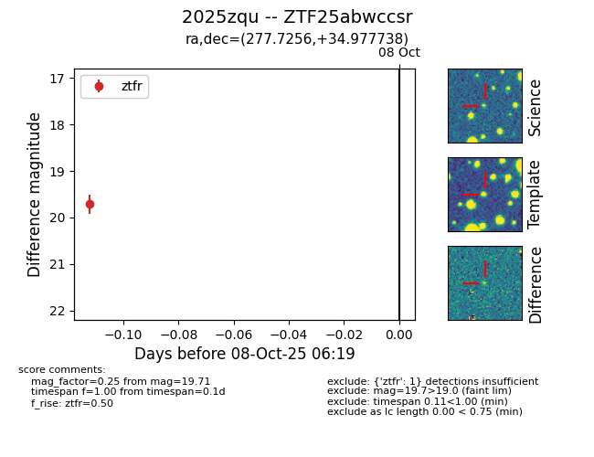

FINK: ZTF25abwccsr
Lasair: ZTF25abwccsr
ALeRCE: ZTF25abwccsr
TNS: 2025zqu
YSE: 2025zqu
ZTF25abwccsr (ztf,fink)
2025zqu (tns,yse)
equatorial (ra, dec) = (277.7256,+34.97774)
galactic (l, b) = (63.2255,+19.06563)

last ztfr=19.71
1 ztfr detections